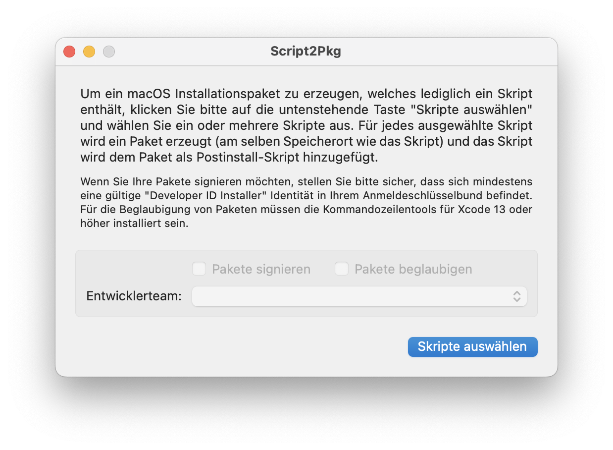
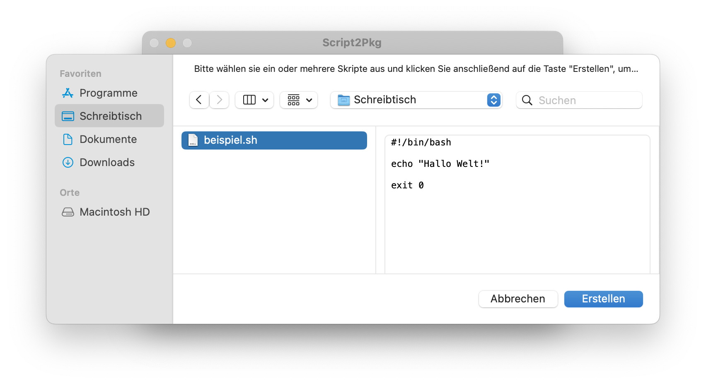
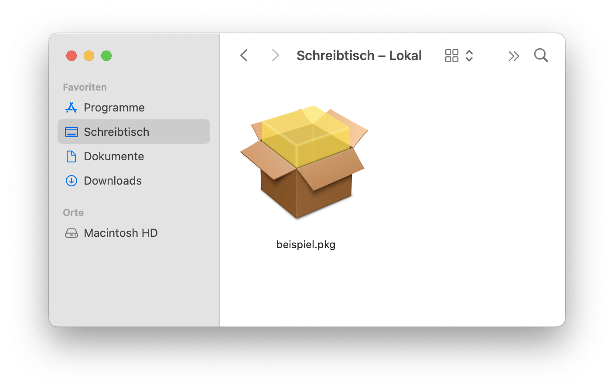

Script2Pkg
Script2Pkg
Script2Pkg
Um mit dieser Anwendung ein nutzlastfreies Paket zu erstellen, benötigen Sie folgende Dinge:
die Script2Pkg Anwendung
ein Skript
Sobald Sie diese beiden Sachen haben, gehen Sie bitte wie folgt vor, um ein nutzlastfreies Paket zu erstellen:
1. Starten Sie die Anwendung .

2. Klicken Sie auf die Taste Skripte auswählen .
3. Wählen Sie ein oder mehrere Skripte in dem nun erscheinenden Fenster aus, und klicken Sie auf die Taste Erstellen .

4. Abhängig davon, ob Sie ein oder mehrere Skripte ausgewählt haben, erstellt Script2Pkg nun ein oder mehrere Pakete. Die Pakete werden im selben Verzeichnis gespeichert, wie die ausgewählten Skripte. Jedes Paket trägt dabei den Namen des ausgewählten Skripts.
